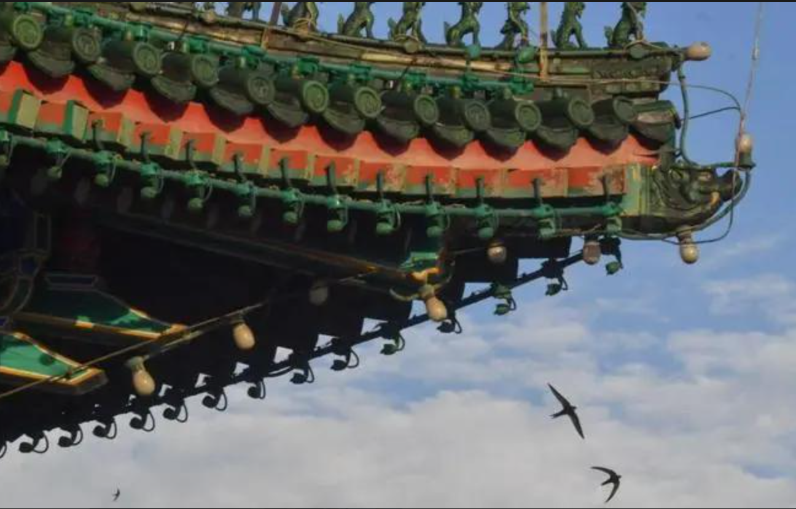
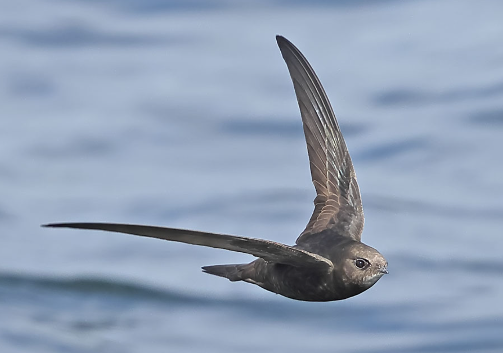
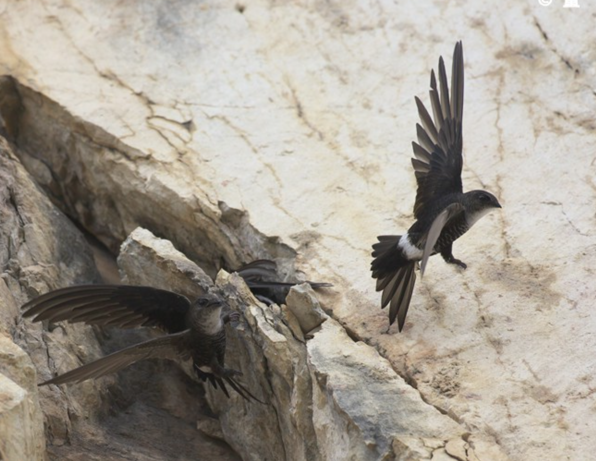
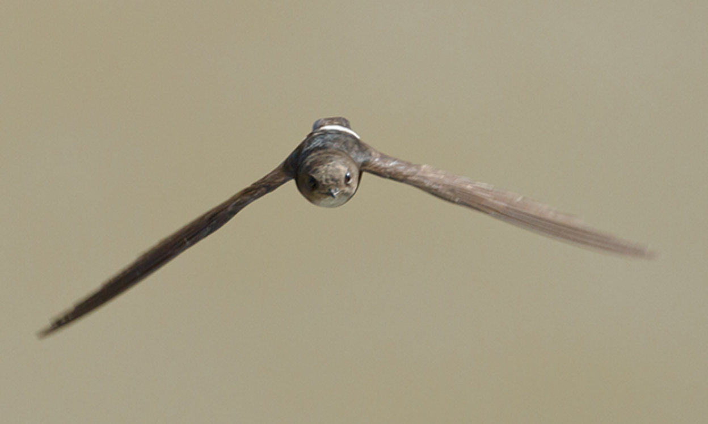
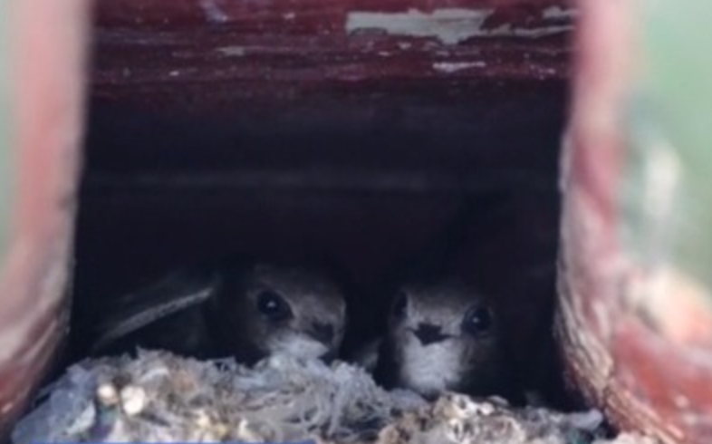

羽翼守望者


雨燕属（Apus）隶属于雨燕科，全球约20种，分布于欧亚大陆、非洲和东南亚。体型小巧（约15-20cm），翼尖长，尾叉状，飞行速度极快。它们几乎终生飞行，捕食飞虫、饮水、交配均在飞行中完成，仅繁殖期短暂停歇于悬崖或建筑物上。
繁殖期营巢于悬崖裂缝、洞穴或建筑缝隙中，每窝产2-4枚卵。雨燕是著名的夏候鸟，夏季成群出现于城市上空捕食昆虫，对控制蚊蝇等害虫有重要作用。
📖 参考：点此处 查看国际鸟盟资料。

普通雨燕是欧洲和亚洲最常见的雨燕，体长约16-18cm，全身黑褐色，喉部具白色斑块。夏季在城市上空成群飞翔，捕食飞虫。
繁殖期5-7月，营巢于建筑物缝隙或屋檐下，每窝产2-3枚卵。冬季迁徙至非洲，是长距离迁徙鸟类。在城市中，它们适应了利用高楼建筑作为繁殖场所。

白腰雨燕体长约18-20cm，上体黑褐色，腰部白色，尾部叉状。分布于亚洲东部，在中国为夏候鸟，常见于山地和城市。
捕食飞虫，常在高空盘旋。繁殖期5-7月，营巢于悬崖或屋檐下，每窝产2-3枚卵。冬季迁徙至东南亚和澳大利亚。

小白腰雨燕体型较小，约14-16cm，上体黑褐色，腰部白色窄带。分布于亚洲南部和东南亚，在中国南方为留鸟。
常见于城市和乡村上空，以飞虫为食。繁殖期3-6月，营巢于建筑缝隙。
📖 参考：点此处 查看 IUCN 评估。

雨燕是城市生态中重要的昆虫控制者，保护建筑缝隙、减少农药喷洒对它们至关重要。公众可通过参与鸟类保护组织、减少使用杀虫剂来帮助它们。
📖 了解更多：点此处 查看中国林草局。